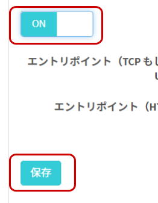

レシピ難易度：★★☆☆☆
SORACOM LTE-M Button Plus と磁石で動くスイッチセンサー(磁気式リードスイッチ)がセットになった「IoT 体験キット ～磁気センサー～」を利用したドアのモニタリングです。SORACOM のサービスを活用してドア開閉の記録から通知までを行います。


本レシピを行うのに必要な時間、概算費用
本レシピは以下の通りです。
- 必要な時間: 約90分
- 概算費用: 約9500円
※ 概算費用: ハードウェアや SORACOM を始めとした各種サービスの概ねの費用 (税や送料などの付帯費用や無料枠適用は考慮しないものとしています)
このコンテンツの進め方
ページの内容を読み、また作業を行ったら右下の［Next］を押して次のステップへ進みます。また、［Back］を使って戻ったり、左のナビゲーションメニューでもページの移動が可能です。
左上の［×］を押してコンテンツを終了することができます。また、ページを開きなおすことで再開できます。ページのアドレスはブラウザの［履歴］メニューを利用してください。
本レシピを行うためには以下のものをご用意ください。
ハードウェア
品名 | 数量 | 価格 | 購入先 | 備考 |
1 | 8,880円 | ソラコム | キットの中には以下のものが含まれています。
| |
パソコン | 1 | ― | ― |
|
※ 金額はレシピ作成時となります。税抜き・送料別です。
その他必要なもの
必要なもの | 費用 | 作成方法など |
SORACOM アカウント | 無料※ |
※ アカウント作成・維持の費用の料金です。
設置に利用したもの
本レシピで設置時に利用した部材です。必須ではありませんがご参考にお使いください。
品名 | 数量 | 備考 |
ビニールタイ | 1 | ケーブルをまとめるのに役立ちます。約400円です。 |
両面テープ | 1 | 磁気センサー等の固定用です。 設置面を傷めて怒られないように配慮できる粘着力のものをご用意ください。 |
SORACOM LTE-M Button は、 SORACOM に登録することで様々なクラウドとの連携が可能となります。そのため、まず SORACOM LTE-M Button がお手元に届いたら、SORACOM へ登録をしましょう。
※ すでに登録済みの場合は次へお進みください。
登録の方法は発注済みの SIM を登録する(JP)をご覧ください。約5分で完了します。
登録が完了すると SORACOM LTE-M Button が "準備完了" として、SIM 管理の一覧に表示されますので、確認ください。
SORACOM の IoT データ収集・蓄積サービス SORACOM Harvest Data を利用して、データの可視化を簡単に実現してみましょう。
まずはグループの作成と、作成したグループへ SIM を所属させる事から始めます。
SORACOM ユーザーコンソールにログインした後［Menu］>［SIM 管理］とクリックして SIM 管理画面を開きます。
SORACOM Harvest Data でデータの収集を行いたい SIM (SORACOM LTE-M Button) にチェックを付け、［操作］>［所属グループ変更］とクリックします。
「新しい所属グループ」のプルダウンボックスをクリックした後、［新しいグループを作成...］をクリックします。

「グループ作成」のグループ名を入力して［グループ作成］をクリックします。
項目 | 例 | 備考 |
グループ名 |
| 自由に入力可能です。日本語も設定可能です。 |
新しい所属グループが先ほど作成したグループになっていることを確認したら［グループ変更］をクリックします。
自動的に SIM 管理画面に戻ります。
SIM の「グループ」に先ほど作ったグループが設定されていることを確認してください。
以上で、グループの作成と所属の作業は完了です。
グループに「バイナリ―パーサー機能」「SORACOM Harvest Data」の2つの設定を行います。
SIM 管理画面から、SORACOM LTE-M Button に割り当てたグループ名をクリックします。
［SORACOM Air for Cellular 設定］をクリックして設定ができるように開きます。

「SORACOM Air for Cellular 設定」で以下のように設定します。
項目 | 設定値 | 備考 |
バイナリ―パーサー設定 | ON | スイッチはクリックすることで OFF から ON に切り替えることができます。 |
バイナリ―パーサー設定 / フォーマット |
| 半角英数で入力してください。 |

最後に［保存］をクリックしてください。
同じページの中にある［SORACOM Harvest Data 設定］をクリックして設定ができるように開きます。

「SORACOM Harvest Data 設定」で以下のように設定します。
項目 | 設定値 | 備考 |
（スイッチ） | ON | スイッチはクリックすることで OFF から ON に切り替えることができます。 |

最後に［保存］をクリックしてください。
その後表示される「SORACOM Harvest Data が有効になっています」のダイアログでは［OK］をクリックしてください。
以上で「バイナリ―パーサー機能」SORACOM Harvest Data」の2つの設定が完了しました。
すでに SORACOM LTE-M Button (の SIM)は、このグループに所属しているためこの時点から SORACOM LTE-M Button からのデータが SORACOM Harvest Data に表示されるようになります。
SORACOM LTE-M Button からのデータが SORACOM Harvest Data に表示されることを確認してみましょう。
［Menu］>［SIM 管理］とクリックして SIM 管理画面を開きます。
SORACOM Harvest Data でデータの表示を行いたい SIM (SORACOM LTE-M Button) にチェックを付け、［操作］>［データを確認］とクリックします。
表示された画面で［自動更新］を ON にします。
この表示された画面が SORACOM Harvest Data の画面となります。

SORACOM LTE-M Button を押してデータを確認する
SORACOM LTE-M Button のデータが SORACOM Harvest Data に表示されていることが確認できます。
1件のデータが到着した様子
※ ボタンを「長押し」したため、clickType の値が 3 として表示されています。
データテーブルを表示する
データはグラフだけでは無く、ページの下の方でデータテーブルとして表示されます。ここで具体的な値を確認できます。

以上で全ての作業は終了です。
「接続端子」の使い方
キットに付属の接続端子は、ハンダ付けや圧着チューブ等を利用せずともケーブル同士を簡易的に接続できる端子です。矢印の方向に結線（接続）されており、このモデルは同時に2本のケーブルをつなげることができます。

SORACOM LTE-M Button Plus との接続ケーブルを接続する
まず、SORACOM LTE-M Button Plus との接続ケーブル(片方に白い端子がついているケーブル)を接続します。(皮膜は取って、金属部分が見えるようにしてください)
端子上部を押さえると、穴の中の金属部分が押し下げられてケーブルが押し込めるようになります。上部を押しつつ、穴にケーブルの金属部分を押し込みます。その後、上部を離すと、金属の弾力でケーブルが固定されます。
押し込める長さはおよそ 5~8mm です。取り付けた後、軽く引っ張ってみて取れなければ成功です。（強く引きすぎると抜けてしまうので注意ください。）
ケーブルの取り外しは、取り付けた時と同様に上部を押さえます。ゆるんだタイミングでケーブルを引き抜いてください。
「IoT 体験キット ～ 磁気センサー」に含まれている磁気センサーにについて
キットに含まれている磁気センサーは「センサー部」「磁石部」という2つの部位で構成されています。
センサー部からは3本のケーブルが出ていますが、このケーブルの組み合わせ方でセンシング可能な内容を「離れた時に "ON"」もしくは「近づいた時に "ON"」と変更できます。
離れた時に "ON" となる組み合わせ
磁気センサー部の「灰」と「赤」のケーブルを SORACOM LTE-M Button と接続します。これにより、磁気センサーのセンサー部と磁石部が離れた時にセンサーが "ON" となります。
例えば、玄関のような「普段は閉まっているドア」に取り付けておき、「開いたら ON」に利用できます。
近づいた時に "ON" となる組み合わせ
磁気センサー部の「灰」と「白」のケーブルを SORACOM LTE-M Button と接続します。これにより、磁気センサーのセンサー部と磁石部が近づいた時にセンサーが "ON" となります。
例えば、店舗の入り口のような「普段は開いているドア」に取り付けておき、「閉まったら ON」に利用できます。
センサーの反応距離
センサーの反応距離は約 2cm です。これよりこれより離れると ON 、もしくは、近づくと ON となります。（センサーの個体差があるため、設置前に確認するようにしてください。）
接続した後は何度かテストを行ってください。
今回は横開きのドアに取り付けました。普段は閉まっていて、開いた時（＝離れた時に ON）にする組み合わせとしました。
SORACOM LTE-M Button Plus の側面に両面テープを貼り、柱に貼り付けてあります。壁紙が若干弱く、両面テープの剥離時に壁面を傷めてしまう恐れがあったため、このような取り付けにしています。
ドアが閉まった状態で近づくようにセンサー部を柱に、磁石部をドア側に貼り付けています。これらも両面テープです。

邪魔なケーブルはいったんビニールタイでまとめています。設置位置が決まったら必要な長さにカットする等しましょう。
動作の様子
開いた直後に SORACOM LTE-M Button Plus の LED の点滅が開始（＝通信開始）していることがわかるかと思います。
実際に動作させてみて SORACOM Harvest Data でデータの受信状況を確認してみてください。
SORACOM LTE-M Button を押した時に、メールの通知を行えるように設定してみましょう。そのためには、クラウドファンクションアダプタ SORACOM Funk を利用します。
本ハンズオンでは、あらかじめソラコムが用意した AWS アカウントの Lambda Function (Hosted Funk) を利用することで、簡単にメールが送信が可能です。
SIM 管理画面から、SORACOM LTE-M Button に割り当てたグループ名をクリックします。
［SORACOM Air for Cellular 設定］をクリックして設定ができるように開きます。
「メタデータサービス設定」で以下のように設定します。
項目 | 設定値 | 備考 |
(スイッチ) | ON | スイッチはクリックすることで OFF から ON に切り替えることができます。 |
ユーザーデータ | 下記の "メール 文章" を入力 | ― |
メール文章
ドアが開きました！
時刻: {{etc.timestamp}} にドアが開いたことを検知しました。
ここで［保存］をクリックしてください。
そのあと、同じページの[SORACOM Funk 設定] をクリックして設定ができるように開きます。
「SORACOM Funk 設定」で以下のように設定します。
項目 | 設定値 | 備考 |
(スイッチ) | ON | スイッチはクリックすることで OFF から ON に切り替えることができます。 |
サービス | AWS Lambda | デフォルトで選択されています。 |
送信データ形式 | JSON | デフォルトで選択されています。 |
認証情報 | 認証情報を指定しない | ― |
関数の ARN | 下記の "関数の ARN" を指定 | ― |
関数の ARN
arn:aws:lambda:ap-northeast-1:762707677580:function:funk-button-email:prod
最後に [保存] を押します。これで準備は完了です。
SORACOM LTE-M Button を押してメールを送信する
この状態で SORACOM LTE-M Button を押すと、オペレーターのメールアドレスに以下のようなメールが送信されます。
本レシピでは費用がかかるサービスを利用しています。
本項をよく読み、必要な操作や解除作業を行うようにして、想定外の費用が掛からないようにしてください。
費用について
ここで記載している金額は全て税別、送料別となります。
SORACOM LTE-M Button
ご利用にあたっては本体の価格とは別に、内蔵されている SIM (plan-KM1) の基本料金(月額100円)と、データ通信量に応じたデータ通信料※が発生します。
plan-KM1 の料金はご利用料金 - 特定地域向け IoT SIM (plan-KM1) をご確認ください。
※ 目安として、1送信あたり約 0.25 ~ 0.3 円程度
SORACOM Harvest Data を始めとした SORACOM プラットフォーム利用料は後述の通りかかります。
SORACOM プラットフォームの利用料金
サービス／機能 | 料金 |
本機能を有効にしたグループに所属する1SIMあたり5円/日 (2000リクエスト/日/SIMを含む) 2000リクエスト/日を超えた分は0.004円/リクエスト | |
1 リクエスト あたり 0.0018 円 |
※ 費用詳細はリンク先をご確認ください。
グループ解除
SORACOM Harvest Data 等、「機能が有効になっているグループに所属している SIM × 費用」となっているサービスにおいては、「機能を OFF にする」することで費用の発生を抑えることができます。またもう1つの方法として「グループに所属している SIM の数を減らす(= 解除する)」事でも費用を抑える事ができます。
また SORACOM Funk の設定やメタデータサービスについては、リクエストが行われなければ費用はかかりませんが、意図せずリクエストが行われるのを避けるため、グループを解除しておくと安心でしょう。
グループ解除の方法はグループからの解除 (JP)をご覧ください。
SORACOM Harvest Data のデータ削除（任意）
SORACOM Harvest Data は基本的にはデータ保管料は無料※です。そのため、保存しておいても害はありませんが、デモ等で利用する際にはデータを綺麗にしておく必要が出てくるため、データ削除について解説します。
※発生から40日を超えたデータは削除されます。40日以上データを保管したい場合はデータ保持期間延長オプション利用料金をご利用ください。
SORACOM Harvest Data 画面 (［操作］>［データを確認］) のデータテーブルで、削除したいデータのチェックボックスを付けた後に［削除］をクリックします。表示されたダイアログで改めて［削除］をクリックすると、削除されます。
※ 複数のデータにチェックをつければ一括で削除可能です。

データの復元はできませんのでご注意ください。
本レシピでは、SORACOM LTE-M Button Plus と磁気センサーを利用したドアの開閉をセンシングしました。
磁気センサーはドアの開閉のみならず、幅広い活用方法が考えられます。
- トイレやお風呂等の生活で利用するドアに取り付けて、遠く離れた家族の見守り
- ガレージや窓に取り付けて、家庭やオフィスの入退出記録
- 冷蔵庫やワインセラーに取り付けて、扉の閉め忘れ防止
- キャビネットに取り付けて、重要書類へのアクセス記録
- リモコン等「いつも元に戻しておいてもらいたいもの」に取り付けて、物品の取出し記録・戻し忘れ対策
また、SORACOM LTE-M Button Plus の接点 I/F には、磁気センサー以外にも以下のようなセンサーを取り付けることが可能です。
- 傾斜スイッチ
- マイクロスイッチ
- キーロックスイッチ
接続の方法などは 半田ごて不要！SORACOM LTE-M Button Plus とセンサーを繋げてみよう をご覧ください。
活用事例集
様々な活用事例がまとまっています
最新LPWA通信規格 "LTE-M" 搭載ボタンで何つくる？〜次々に身近なユースケースが生まれる理由〜
Appendix
メール送信先の変更
オペレータのメールアドレス以外のメールアドレスに送信したい場合には、以下の方法で送信先メールアドレスを変更できます。
［Menu］>［SIM 管理］とクリックします。
対象となる SIM (SORACOM LTE-M Button) にチェックを付け、［詳細］をクリックします。
SIM 詳細で［タグ］をクリックし、その後［＋］をクリックします。
タグの編集で以下の通り入力します。
項目 | 設定値 | 備考 |
名前 |
| ― |
値 | (送信先メールアドレス) | 間違えないように気を付けてください |
最後に保存を押します。これで送信先メールアドレスの変更が出来ましたので、ボタンを押して送信してみましょう。
メール本文のカスタマイズ方法
SORACOM Air for Cellular 設定のメタデータにおける「ユーザーデータ」がメール本文となります。
ユーザーデータの１行目は件名として使われ、２行目以降が本文となります。また、2行目以降の本文でHTMLタグを入れると自動的に HTML メールとなります。
本文中に {{event.clickTypeName}} などと書く事によって、メールの中に様々な情報を差し込むことが出来ます。利用可能なパラメータは、ユーザーデータ未設定時やメタデータのスイッチが OFF の場合に送信されるデフォルトのメールに記載があります。
デフォルトのメール本文は以下の通りです。
ボタン 7MF6J01234567890 が SINGLE クリックされました
- バッテリー残量: 100 %
- 位置情報: 緯度,経度 = 35.67026205900455,139.74446296691895
--
以下の情報はメールテンプレートで {{event.xxx}} {{context.xxx}} {{tags.xxx}} {{etc.xxx}} のように参照できます
event:
clickType: 1
clickTypeName: "SINGLE"
BatteryLevel: 1
BatteryLevelPercent: 100
context:
imsi: 440527777777777
imei: 359567777777777
operatorId: "OP0123456789"
location:
lat: 35.67026205900455
lon: 139.74446296691895
tags:
name: "7MF6J01234567890"
mail_to: "" (未設定の場合は空欄)
etc:
timestamp: "2020/05/16 09:51:11 JST"
timestampUtc: "2020/05/15 00:51:11 UTC"
unixtime: 1589590271.554126